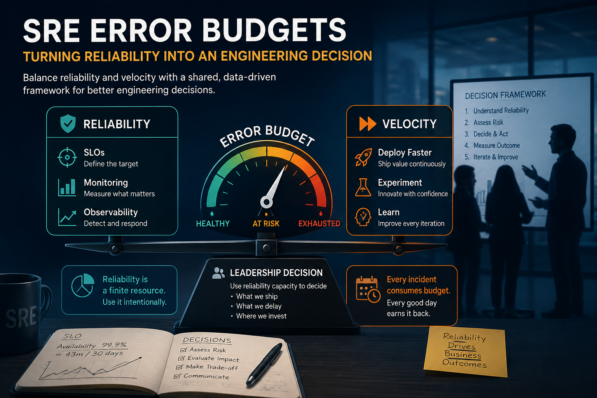

SRE Error Budgets: Turning Reliability Into an Engineering Decision
How engineering leaders can use SLOs, error budgets and burn rate to make reliability and delivery trade-offs explicit.
How engineering leaders can use SLOs, error budgets and burn rate to make reliability and delivery trade-offs explicit.

Most engineering organizations understand the basic idea of an SLO.
They can define availability targets. They can build dashboards. They can calculate error-budget consumption.
The difficult part comes later.
A major release is approaching. Product has committed to a customer date. Engineering has spent months building the capability. Then someone points out that the service has already consumed a significant portion of its reliability budget.
Now what?
Do we delay the release?
Do we accept the risk?
Do we ask the team to work on reliability instead?
Who makes that decision?
I've seen organizations spend considerable effort implementing SLOs and error budgets, only to discover that they had never answered those questions.
The monitoring worked. The calculations worked. The organizational model didn't.
That is where many error-budget programs actually break down.
An error budget is valuable not because it tells us how much downtime we can tolerate. It is valuable because it gives engineering, product and leadership a common mechanism for making a difficult trade-off.
Engineering leaders are constantly balancing two legitimate objectives.
The business needs new capabilities delivered. Customers also expect the existing product to remain dependable.
Neither objective is wrong.
The problem starts when they are managed independently.
Product says, "We need this capability in production this quarter."
Engineering says, "The platform needs stabilization first."
SRE says, "We're already burning reliability budget."
Without a shared framework, the discussion quickly becomes personal.
Who has more authority? Whose priority wins? Who is taking the risk?
That is not a scalable way to run an engineering organization.
A well-designed error-budget model changes the conversation.
Instead of asking, "Should we prioritize reliability or delivery?", the organization can ask:
Given our current reliability position, what level of delivery risk are we prepared to accept?
That is a leadership conversation.
The underlying calculation is straightforward.
If a service has a 99.9% availability SLO, the remaining 0.1% represents the permitted unreliability during the measurement period. Over a 30-day period, that is approximately 43 minutes of unavailability.
But the number itself isn't the interesting part.
The important concept is that reliability becomes a finite resource.
A production incident consumes some of that resource. A failed deployment may consume some. A dependency outage may consume some. Repeated performance degradation may consume it gradually over time.
When reliability is healthy, the organization has more room to take delivery risk.
When reliability deteriorates, that freedom should decrease.
This is why I prefer thinking about an error budget as reliability capacity rather than simply a metric.
Once you view it that way, the purpose becomes much clearer.
The question isn't simply, "How much budget do we have?"
It becomes:
How should we use the reliability capacity we have left?
The technology is rarely the difficult part. The organizational design is.
Teams build sophisticated dashboards showing SLO attainment, budget consumption and burn rate.
Then nothing changes.
Nobody has defined what the numbers mean for engineering decisions.
That's measurement without management.
This is another common failure.
SRE reports that the error budget is low. Product wants to release. SRE says no. Product escalates.
Eventually the error budget becomes perceived as an SRE restriction rather than an organizational mechanism.
That is the wrong operating model.
SRE should provide the reliability data and technical context. It should not become the department responsible for policing every engineering decision.
A blanket rule such as "budget exhausted = stop all releases" sounds simple.
In practice, it can be counterproductive.
Not every change has the same operational risk.
A documentation change and a database migration should not automatically receive the same treatment.
The organization needs risk-based governance, not bureaucracy.
This is probably the most damaging failure mode.
If leadership repeatedly overrides the error-budget policy without recording the trade-off, teams eventually learn that the budget doesn't really matter.
Once that happens, the framework loses credibility.
The organization still has dashboards. It no longer has governance.
An SLO answers:
What level of reliability do our customers reasonably need?
The error budget answers:
How much deviation from that target are we prepared to tolerate?
That sounds simple, but choosing the SLO itself requires leadership judgment.
A team shouldn't automatically choose 99.99% because it sounds better than 99.9%.
Every additional nine has a cost: more engineering effort, more operational complexity, less tolerance for change and potentially higher infrastructure cost.
The right target is therefore not the highest reliability we can technically achieve.
It is:
The reliability level that provides the customer experience the business requires at a sustainable engineering cost.
Reliability targets are ultimately business decisions expressed through engineering measurements.
This is where the error budget becomes operationally useful.
I don't recommend treating it as a binary switch. Healthy or exhausted. Ship or stop.
Real systems are more nuanced than that.
A better model uses operating states.
Teams maintain normal delivery autonomy.
There is no reason to create additional approval layers simply because an SLO exists.
The organization should start asking why.
Was there a recent deployment? Is one dependency responsible? Are incidents becoming more frequent? Is a particular failure mode consuming disproportionate budget?
This is the point where investigation and remediation should increase.
The organization should become more selective about change.
High-risk releases deserve greater scrutiny. Reliability work may need to move ahead of lower-value feature work.
The objective isn't to stop engineering. It's to reduce additional risk while recovering reliability capacity.
At this point, continuing normal delivery means knowingly accepting additional reliability risk.
There may still be circumstances where that is the right decision.
But it should be explicit.
Someone should be able to explain what we're releasing, what reliability risk we're accepting, why the business needs it, what recovery work is being prioritized and when we expect to restore reliability capacity.
That is governance.
A monthly error-budget number can hide a serious problem.
Imagine a service has consumed only 20% of its monthly budget. That sounds healthy.
But suppose most of that consumption occurred in the last two hours.
The trend tells a very different story.
This is where burn rate matters.
Burn rate provides a view of how quickly the organization is consuming reliability capacity relative to the sustainable rate.
For engineering leaders, this is much more useful than simply looking at the percentage remaining.
A service that has consumed 60% of its budget steadily over several weeks may require a very different response from one that consumed 20% in an hour.
Velocity of risk matters.
This is where the framework either becomes useful—or becomes another dashboard.
Consider two changes.
The first is a low-risk configuration change with automated testing, a small blast radius and an easy rollback.
The second is a major database migration affecting a critical customer path with limited rollback capability.
If the service has consumed most of its reliability budget, these changes should not necessarily receive the same treatment.
The second deserves much more scrutiny.
This leads to an important principle:
An error budget should influence the level of risk the organization is willing to accept—not automatically determine whether every change can ship.
That distinction allows organizations to protect reliability without creating a delivery bureaucracy.
I often think this question is framed incorrectly.
People ask, "Who owns the error budget?"
The better question is:
Who owns the reliability outcome?
SRE provides the reliability measurement and operational insight.
Engineering understands implementation risk and remediation effort.
Product understands customer and business priorities.
Leadership provides the context for organizational trade-offs.
That makes the error budget a shared contract, not an SRE-owned control mechanism.
SRE shouldn't have to argue, "You can't release because I say so."
The conversation should be:
Here is our current reliability position, here is the risk associated with the proposed change, and here is what we're trading off.
That is a much healthier relationship between engineering and product.
An executive reliability review shouldn't be a tour of dashboards.
The useful questions are relatively simple.
Are critical customer journeys meeting their SLOs?
How much error budget have we consumed?
Are we burning the budget faster than expected?
Are deployments contributing materially to reliability degradation?
Are the same failure modes appearing repeatedly?
When something fails, how quickly can the organization restore service?
Are we allocating enough engineering capacity to address systemic reliability problems?
These measures tell a much more meaningful story than uptime alone.
The success of an error-budget program isn't measured by whether the dashboard exists.
It's measured by whether engineering conversations change.
Instead of asking, "Can we release this?", the conversation becomes:
What reliability risk does this release introduce?
Instead of asking, "Why is SRE blocking us?", the conversation becomes:
What does the current reliability position allow us to do safely?
Instead of asking, "We need to fix everything.", the conversation becomes:
Which failure mode is consuming the most reliability capacity?
And instead of waiting for the next major incident, leadership starts asking:
What is repeatedly consuming our reliability budget, and why haven't we eliminated the underlying problem?
That's the behavior change worth pursuing.
A mature error-budget model doesn't need to be complicated.
I would structure it around five activities.
Establish the customer journey, SLI, SLO, measurement window and acceptable reliability threshold.
Track SLO attainment, budget consumption, burn rate, incident impact and change-related failures.
Create a small number of operational states.
For example:
Healthy → Elevated → Critical → Exhausted
The exact thresholds should be appropriate to the service.
The important part is agreeing on them before the organization is under pressure.
Define the response for each state.
Healthy reliability should preserve delivery autonomy. Elevated consumption should trigger investigation. Critical burn should increase scrutiny of high-risk changes. Exhaustion should make reliability recovery an explicit engineering priority.
After significant budget consumption, don't simply reset the number and move on.
Ask what consumed the budget, whether the failure was preventable, whether a deployment contributed, whether we detected it early enough, whether we recovered quickly enough, whether there is an architectural weakness and whether we are repeatedly paying for the same failure mode.
The last question is particularly important.
Repeated budget consumption is often an architectural signal, not simply an operational problem.
There is one failure mode that deserves particular attention.
An organization can become very good at managing the error budget without becoming better at reliability.
Teams learn how to explain consumption. They create increasingly sophisticated dashboards. They become skilled at requesting exceptions.
But the same architectural problems continue generating incidents.
That is not reliability engineering.
It's reliability accounting.
The objective should be to use the error budget as a feedback mechanism that drives engineering improvement.
If the same failure consumes the budget month after month, the leadership conversation should eventually move from:
How much budget did we consume?
to:
Why does this failure mode still exist?
If these questions don't have clear answers, the organization may have SLOs and dashboards—but not yet an error-budget operating model.
The most valuable thing about an error budget isn't the calculation.
It's the conversation it enables.
It gives Product, Engineering, SRE and leadership a common language for discussing risk.
It allows an organization to say:
That is considerably more powerful than telling teams to "care more about reliability."
No engineering organization can eliminate operational risk.
Every meaningful change introduces some uncertainty. Every distributed system has failure modes. Every business eventually has to make a decision where delivery urgency competes with reliability risk.
The mature response isn't to pretend that trade-off doesn't exist.
It's to make the trade-off visible.
That's what a well-designed error budget provides.
SLOs define the reliability objective.
Error budgets define the tolerance.
Burn rate shows how quickly that tolerance is being consumed.
Governance defines the response.
And leadership makes the trade-off explicit.
The real measure of success isn't whether an organization can calculate its error budget.
It's whether that number changes the decisions being made in the organization.
Because reliability becomes sustainable when it stops being "the SRE team's concern" and becomes part of how the entire engineering organization decides what to build, what to release, what to postpone and where to invest.
That's when an error budget stops being a metric and becomes an engineering operating mechanism.